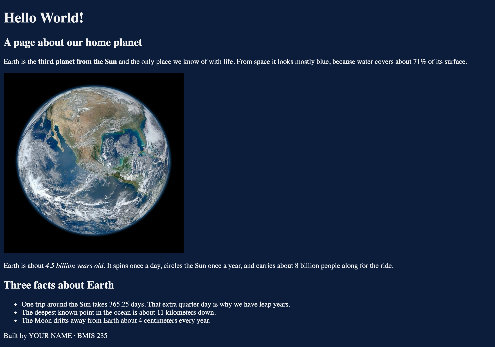
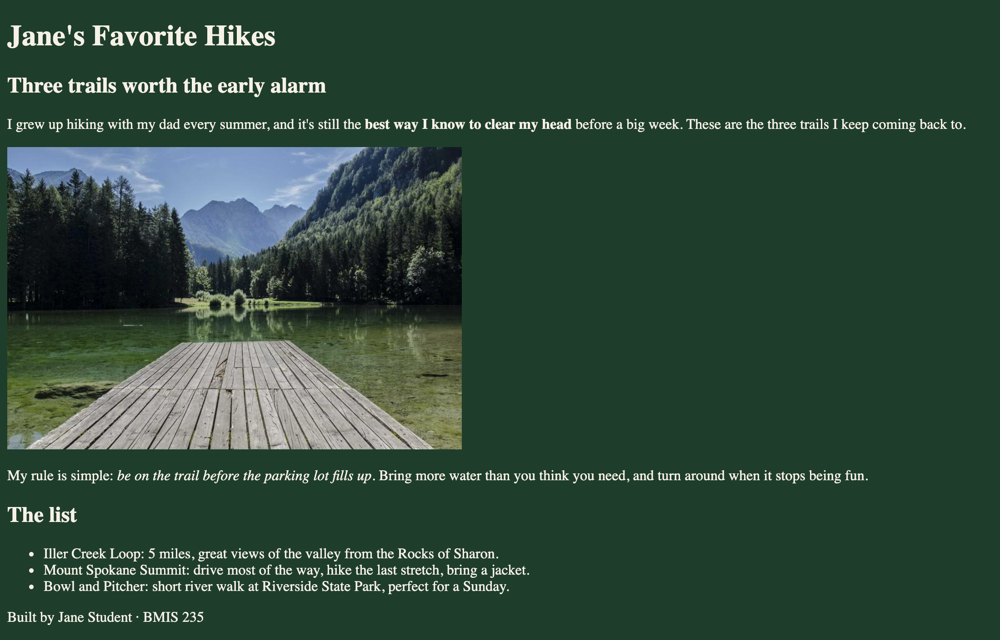

HTML-1
Styling: Hello World
Publish your first web page, then make it yours. Text, images and colors all live in the code.
Get this assignment
Finish Start here first if you don't have a GitHub account yet.
- Click the button, then Create a new repository.
Button shows a 404? This assignment hasn't been released yet.
- Repository name:
bmis235-html-1(exactly this). Set it to Public. - In your new repo, go to Settings → Pages. Under Build and deployment, choose Deploy from a branch, pick main and / (root), then click Save.
- After 1–2 minutes, open
https://YOUR-GITHUB-USERNAME.github.io/bmis235-html-1/. You'll see "Hello World!" and a picture of Earth. Your job is to turn it into a page about something you care about.
Starter files in your repo: index.html, earth.jpg, README.md
Seeing a 404 on your live link? Wait up to 5 minutes. Settings → Pages says Your site is live when it's ready.
Before and After


How it works
- A repo is a folder of files that lives on GitHub. Yours is called
bmis235-html-1. - A commit saves a version of your files, like "Save as" with a note about what changed. Every commit stays in the history, so you can always go back.
- GitHub Pages turns that folder into a live link anyone can open. Change a file, commit, and the live page updates in a minute or two.
How to read HTML
HTML is text wrapped in tags. Most tags come in pairs: an opening tag and a closing tag with a /.
<h1>Hello World!</h1><h1> opens a big heading, </h1> closes it, and the words in between show on the page. Some tags, like <img>, don't need a closing tag. Extra details go inside the opening tag, like src="earth.jpg". Those details are called attributes.
The colors live in a <style> block in the <head>. Look for the comment /* change these colors */.
What to do
- Change the
<title>so the browser tab shows your name.1 pt - Write a new heading, subheading and paragraphs on your own topic. Keep at least one
<strong>(bold) and one<em>(italic).2 pts - Replace the three Earth facts with your own list of 3 or more items.1 pt
- Replace
earth.jpgwith an image you uploaded, with alt text that describes it.2 pts - Change the background and text colors that are already in the
<style>block.1 pt - Break and restore: make a commit that breaks the page on purpose, then use the history to put it back. Paste the link to the restoring commit in Canvas.1 pt
- Submit a working GitHub Pages link.2 pts
Steps
- In your repo, open
index.htmland click the pencil icon. - Read the code. Find the title, the headings, the paragraphs, the list, the image and the colors.
- Change the title and the text. Commit with a message like "Change the page to my topic".
- Upload your image: on your repo's main page, click Add file → Upload files, drop the image in, and commit.
- Back in
index.html, changesrc="earth.jpg"to your image's exact file name and write new alt text. Commit. - Change the two colors in the
<style>block. Commit. - Do the break-and-restore exercise below.
Break and restore
Every commit is saved. That means you can't really lose your work, and the only way to believe it is to try it.
- Open
index.htmlwith the pencil. Delete the whole<img ...>line. Commit with the message "Break the page on purpose". Check your live page: the picture is gone. - Back on the file's page, click History (top right, above the code). You'll see every commit for this file.
- Click the commit you just made. GitHub shows what changed: red lines were removed, green lines were added. Your image line is in red.
- Click the Browse files button on that commit page to see the repo as it was, open
index.html, and copy the image line. Or just retype it. - Go back to your repo, open the file with the pencil, paste the line back in, and commit with the message "Restore the image". Check the live page.
- Open History again and click your "Restore the image" commit. Copy the web address from your browser. It looks like
github.com/YOU/bmis235-html-1/commit/a1b2c3.... That's the link you paste in Canvas.
No Revert button? GitHub only shows one for pull requests, which we aren't using. Copying from the history is the normal way to restore a file in the browser. It also works for bigger breaks: open Browse files at a good commit, open the file, copy everything, and paste it over the broken version.
Hints
- Before you upload an image, rename it: lowercase, no spaces (for example
gu-hoops.jpg). GitHub can't rename images in the browser, so do it on your computer first. - The name in the code must match the file exactly.
.jpg,.jpegand.pngare three different endings.Photo.JPGandphoto.jpgare two different files. - Image too big? Add
width="400"inside the<img>tag, like the starter does. - Colors can be names (
navy,white) or hex codes (#0b1d3a). Search "html color picker" to find a code. - Change not showing? Wait a minute, then hard-refresh (Ctrl+Shift+R or Cmd+Shift+R).
Make it yours
- Fill in the author comment at the top of every file with your name and GU username.
- Fill in
<meta name="author">with your name. - Fill in the footer: Built by YOUR NAME · BMIS 235.
- Make at least 3 commits with clear messages (not "Update index.html").
- Your topic, your image and your colors. Add a comment in your code naming the hex color you chose, like
<!-- my background: #1f3a5f -->.
When you're stuck
- Say it in one sentence: "I expected ___, but I see ___."
- Pick one problem. Ignore the rest for now.
- Find the line. Which tag or file is it in?
- Search your one sentence (W3Schools, Google, YouTube).
- Change one thing, commit, check. Didn't work? Undo it and try the next idea.
"Nothing works" can't be searched. "My image shows a broken icon" can.
Submit
- Wait 1–2 minutes after your last commit.
- Open your live link and check that everything works:
https://YOUR-GITHUB-USERNAME.github.io/bmis235-html-1/ - Paste that link into Canvas, plus the link to your restoring commit.
Rubric
| Criteria | Pts |
|---|---|
| Tab title shows your name | 1 |
| New heading, subheading and paragraphs on your own topic (bold and italic kept) | 2 |
| Your own list of 3+ items | 1 |
| Uploaded image replaces earth.jpg, with alt text | 2 |
| Background and text colors changed | 1 |
| Break-and-restore commit link in Canvas | 1 |
| Working GitHub Pages link | 2 |
| Total | 10 |